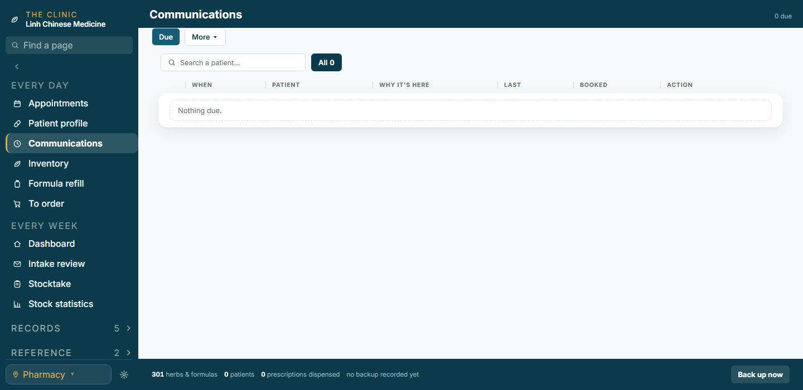
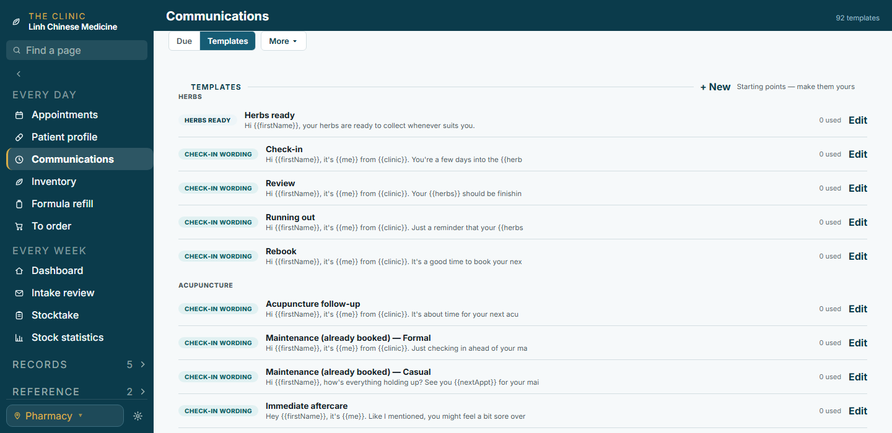
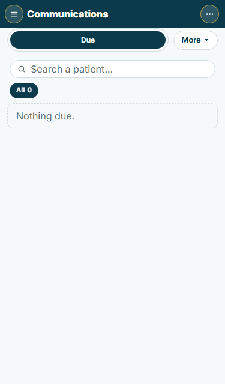
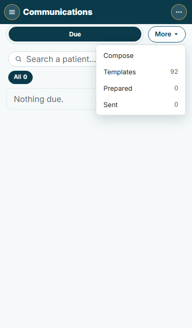
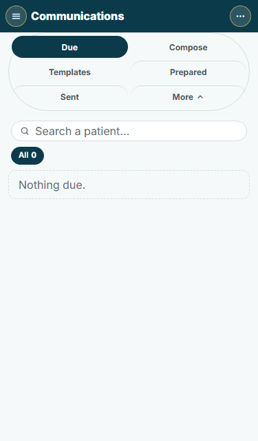
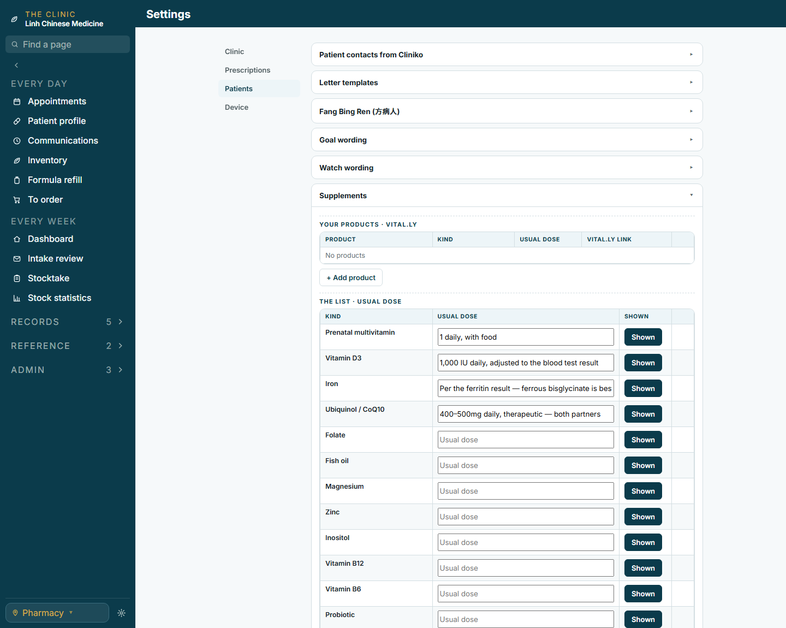
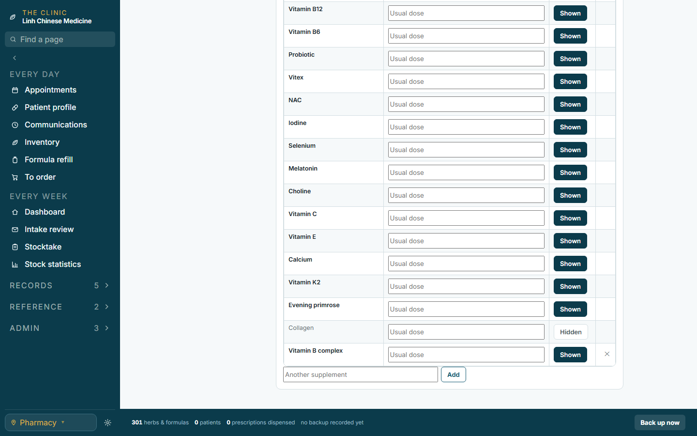
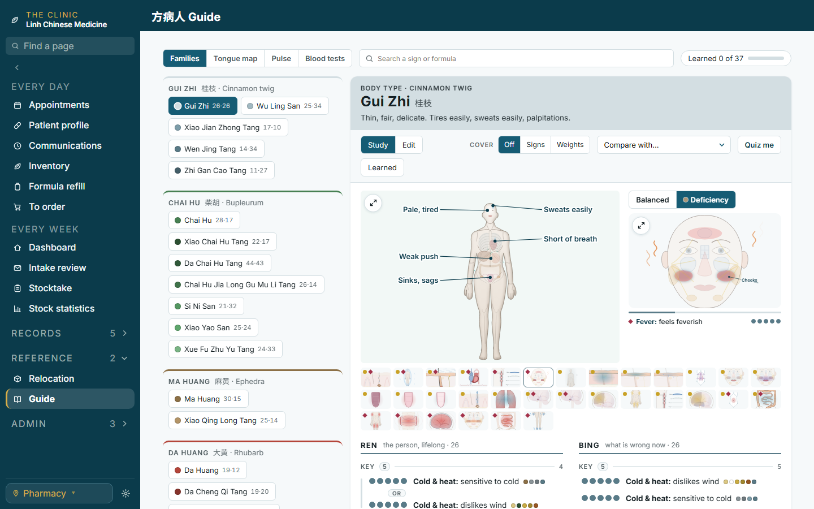
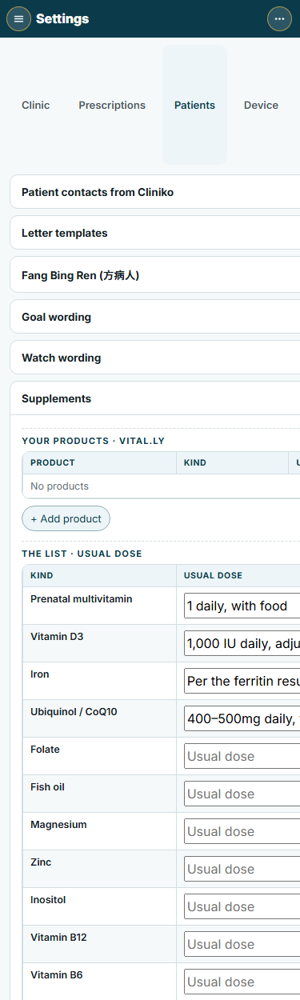

Your picks from the usage audit, drawn by the app itself: these pictures are a patched copy of LCM, so what you see is what gets built. Nothing is changed yet. Sandbox copy, no patient records.
1 · Communications: Due + More
AA More ▾ chip beside the stripRecommended
The strip is Due alone. More ▾ opens the four with their counts. Pick one and it shows as a chip beside Due while it is open; tap Due and it folds away.

Closed. Due, then More ▾.More ▾ open. Compose · Templates 92 · Prepared 0 · Sent 0.

Templates picked. It sits beside Due while open.

Phone. Due stretches, More ▾ keeps its width.

Phone, open. The menu hangs from the right edge.
BThe four unfold inside the strip
More sits inside the strip; a tap unfolds Compose · Templates · Prepared · Sent next to Due, the chevron turns (as the Messages tab's All chip). On the phone the strip wraps to a second row.
Closed. Due · More ▾ in one strip.Open. Six segments; the chevron points up.

Phone, open. Two rows.
2 · Supplements into Settings
ASettings › Patients › Supplements: the list is a tableRecommended
Kind · Usual dose · Shown, one row per kind. The four doses are filled in from the old page; the others start empty. A dose you type here pre-fills a patient's row when you turn that kind on (as the four already do). Your own kinds get a ✕. The Reference group keeps Relocation and the Guide.

Desktop. Products above, the list below as a table; the four doses filled in.

The foot of the list. Collagen hidden (faint, chip reads Hidden); Vitamin B complex is an own kind with ✕; Another supplement under it as now.

Sidebar. Reference · 2: Relocation, Guide.

Phone. The table scrolls sideways inside its card, as the products table does.
The questions (popups follow)
Communications:A, the More ▾ chip and menu, or B, the four unfold inside the strip?
The More menu:names with counts, or names only?
Supplements list:the table, or keep the chips with dose fields on the four only?
The researched text:drop it from the screens (the dose letter keeps its words), or keep the range faint under each dose?
Reference group:keep it with two lines, or fold Relocation into Admin and the Guide into Records?
A patient's row:pre-fill the usual dose (as now), or leave it empty and show the usual dose faint?
Communications opens on:always Due, or the last section on this device?